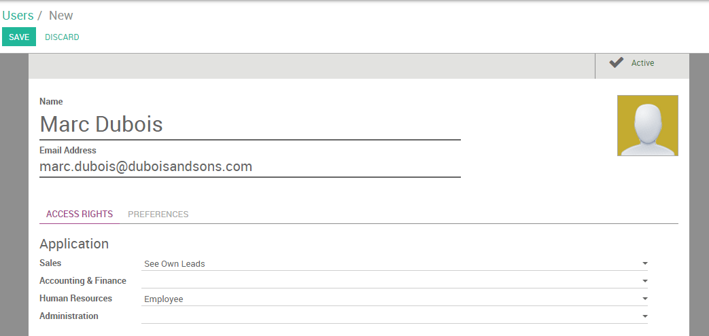
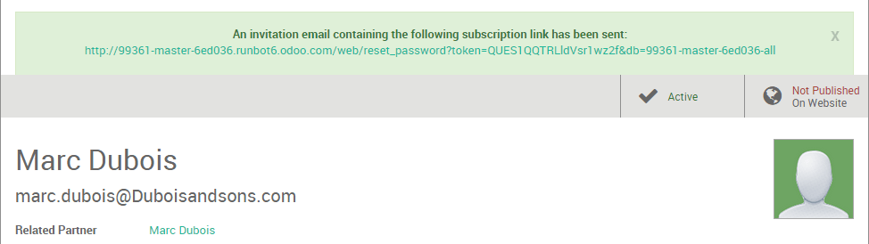
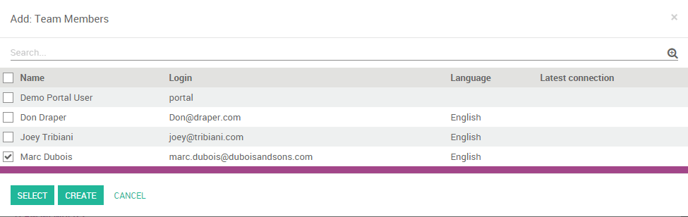

Create a new user
From the Settings module, go to the submenu and click on Create. Add first the name of your new salesperson and his professional email address - the one he will use to log in to his Odoo instance - and a picture.
Under "Access Rights", you can choose which applications your user can access and use. Different levels of rights are available depending on the app. For the Sales application, you can choose between three levels:
- See own leads: the user will be able to access his own data only
- See all leads: the user will be able to access all records of every salesman in the sales module
- Manager: the user will be able to access the sales configuration as well as the statistics reports
When you're done editing the page and have clicked on Save, an invitation email will automatically be sent to the user, from which he will be able to log into his personal account.
Register your user into his sales team
Your user is now registered in Odoo and can log in to his own session. You can also add him to the sales team of your choice. From the sales module, go to your dashboard and click on the More button of the desired sales team, then on Settings.
Note
If you need to create a new sales team first, refer to the page How to create a new team?
Then, under "Team Members", click on Add and select the name of your salesman from the list. The salesperson is now successfully added to your sales team.
Tip
You can also add a new salesperson on the fly from your sales team even before he is registered as an Odoo user. From the above screenshot, click on "Create" to add your salesperson and enter his name and email address. After saving, the salesperson will receive an invite containing a link to set his password. You will then be able to define his accesses rights under the menu.